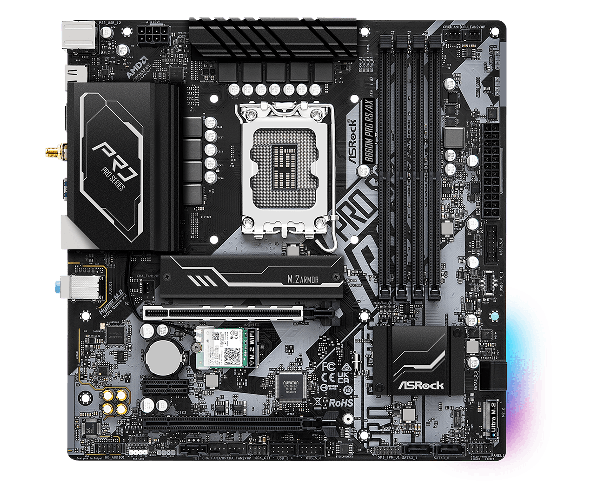

Anakart
Anakart, bilgisayarın tüm donanım bileşenlerinin birleştiği ve birbiriyle iletişim kurmasını sağlayan temel devre kartıdır. İşlemci (CPU), bellek (RAM), ekran kartı (GPU), depolama birimleri (SSD/HDD), güç kaynağı ve diğer çevresel bileşenlerin anakarta bağlanarak birlikte çalışmasını mümkün kılan bir yapıdır. Anakartın kalitesi, veri iletim hızları, genişletilebilirlik ve performans açısından bilgisayarın genel işleyişini büyük ölçüde etkiler. İyi bir anakart seçimi, sistemin uzun ömürlü, kararlı ve yüksek performanslı çalışmasını sağlar.
Anakartın Temel Bileşenleri
Bir anakartın bileşenleri, sistemin nasıl çalışacağını belirleyen kritik unsurlardır. İşte bir anakart üzerinde yer alan en önemli parçalar:
1️⃣ Yonga Seti (Chipset)
Yonga seti, anakartın beynidir ve sistemin ne kadar hızlı çalışabileceğini, hangi donanımları destekleyebileceğini belirler. Kuzey Köprüsü (Northbridge): İşlemci, RAM ve ekran kartı gibi yüksek hızlı bileşenleri yönetir. Güney Köprüsü (Southbridge): Depolama, USB portları, ses kartı gibi daha yavaş bileşenleri kontrol eder. Modern anakartlarda bu iki köprü genellikle tek bir çipset içinde birleşmiştir.
2️⃣ İşlemci Soketi (CPU Soketi)
İşlemcinin (CPU) takıldığı bölümdür. Anakartın desteklediği işlemci tipi, üzerindeki soket türüne bağlıdır. Örneğin: Intel işlemciler için yaygın soket türleri: LGA 1200, LGA 1700, LGA 2066 AMD işlemciler için yaygın soket türleri: AM4, AM5, sTRX4 (Threadripper) Eğer bir anakartın işlemci soketi kullandığın işlemciyle uyumlu değilse, işlemciyi çalıştıramazsın.
3️⃣ RAM Yuvaları (DIMM Slotları)
Bilgisayarın geçici belleği olan RAM modüllerinin takıldığı bölümdür. DDR4 ve DDR5 bellek türleri şu anda en yaygın kullanılanlardır. RAM yuvalarının sayısı 2, 4 veya 8 olabilir. Çift kanal (Dual Channel) veya dört kanal (Quad Channel) desteği, bellek hızını artırabilir. Bir anakartın maksimum desteklediği RAM kapasitesi, sistemin performansı açısından önemlidir.
4️⃣ PCIe Yuvaları (Genişleme Slotları)
Ekran kartı (GPU), ses kartı, Wi-Fi kartı, NVMe SSD’ler ve diğer genişleme kartlarının bağlandığı yuvalardır. PCIe 3.0, 4.0 ve 5.0 gibi farklı hız standartları vardır. PCIe 16x, ekran kartları için en hızlı slot türüdür. Özellikle oyun bilgisayarları ve profesyonel iş istasyonları, çok sayıda PCIe yuvasına sahip anakartları tercih eder.
5️⃣ Depolama Bağlantıları (SATA ve M.2)
SATA bağlantıları HDD ve 2.5” SSD'leri destekler (SATA 3: 6Gbps). M.2 yuvaları, NVMe SSD'leri destekleyerek çok daha yüksek hızda veri transferi sağlar (PCIe 4.0 veya 5.0). Yeni nesil anakartlarda M.2 NVMe SSD yuvaları daha fazla yer kaplarken, eski nesil SATA portları giderek azalmaktadır.
6️⃣ Arka Giriş/Çıkış (I/O) Bağlantı Noktaları
Anakartın arka tarafında yer alan portlar, bilgisayarın çevre birimleriyle bağlantısını sağlar.
USB Portları (USB 3.2, USB-C, Thunderbolt gibi hızlı veri aktarım portları)
- Ethernet Portu (Ağ bağlantısı için)
- Ses Çıkışları (Kulaklık, mikrofon, hoparlör bağlantıları)
- HDMI, DisplayPort, VGA, DVI (Harici görüntü çıkışları)
- Modern anakartlarda USB-C ve yüksek hızda veri aktarımı sağlayan Thunderbolt 4 portları yaygınlaşmaktadır.
Anakart Seçerken Dikkat Edilmesi Gerekenler
Bir anakart seçerken şu kriterlere dikkat etmelisin:
✔ İşlemci Uyumluluğu: Kullanmak istediğin işlemciyle uyumlu mu?✔ RAM Desteği: Maksimum RAM kapasitesi ve hızı yeterli mi?
✔ Genişleme Yuvaları: Ekran kartı, SSD ve diğer bileşenler için yeterli PCIe yuvası var mı?
✔ Bağlantı Seçenekleri: USB-C, Wi-Fi, Bluetooth ve diğer bağlantı noktaları ihtiyacını karşılıyr mu?
✔ Overclock Desteği: Yüksek performans için hız aşırtma (OC) yapmak istiyorsan, VRM kalitesi iyi mi?
✔ Geleceğe Dönük Olması: Yeni nesil teknolojileri destekliyor mu? (PCIe 5.0, DDR5, Wi-Fi 6E vb.)
Anakart Çeşitleri
🖥 1. ATX Anakartlar (Standart Boyut)
Boyut: 30.5 cm x 24.4 cm Özellik: En fazla genişleme yuvasına ve bağlantı noktasına sahip. Kullanım Alanı: Oyun bilgisayarları, iş istasyonları, profesyonel sistemler.
💻 2. Micro-ATX Anakartlar (Orta Boyut)
Boyut: 24.4 cm x 24.4 cm Özellik: Daha az genişleme yuvasına sahip, ama ATX’e göre daha küçük. Kullanım Alanı: Günlük kullanım bilgisayarları, orta seviye oyuncu sistemleri.
🎮 3. Mini-ITX Anakartlar (Kompakt)
Boyut: 17 cm x 17 cm Özellik: Küçük kasalar için idealdir ama genişleme seçenekleri sınırlıdır. Kullanım Alanı: Küçük ama güçlü sistemler, mini PC’ler.